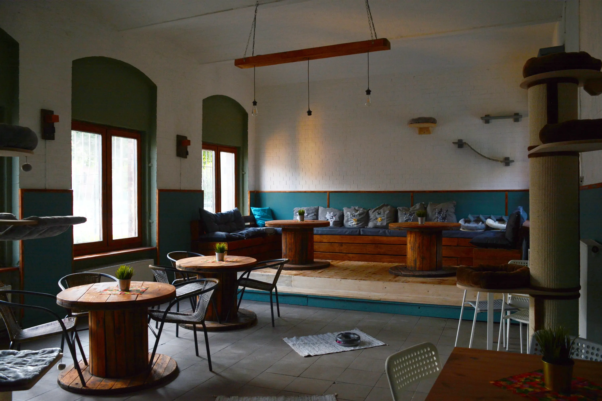
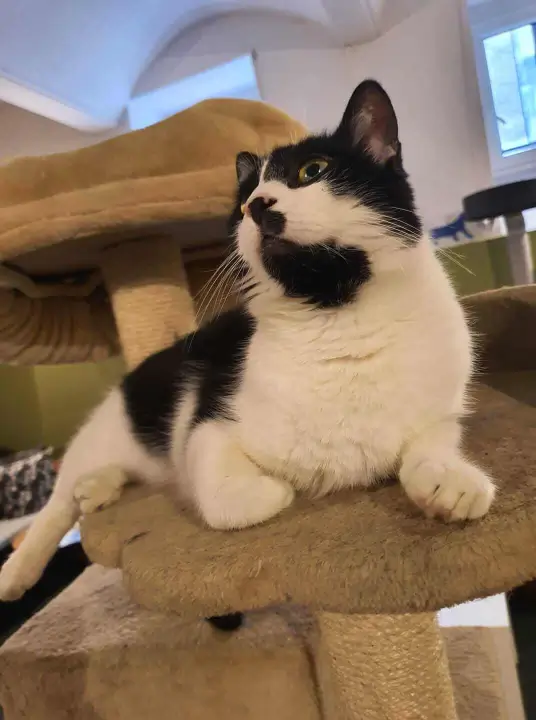

Mruczkowo
Kocia Kawiarnia i Dom tymczasowy Mruczkowo jest otwarta dla miłośników kotów. To nowatorski typ kawiarni, ponieważ poza wyśmienitymi deserami możecie Państwo pobawić się z naszymi podopiecznymi — kotami, dla których kawiarnia jest domem tymczasowym. Kawiarnia działa od 2018 roku. Początkowo Mruczkowo znajdowało się w Zabrzu na ulicy 3 Maja. Obecnie jesteśmy w Gliwicach na ulicy Dworcowej.  Wszystkie koty będące w kawiarni są do adopcji, więc jeżeli ktoś zakocha się w naszym kawiarnianym kocie, może po pozytywnej weryfikacji i spełnieniu formalności zabrać go do domu i cieszyć się życiem domowego mruczka. W naszej kawiarni menu nie jest obszerne, ale większość potraw jest robiona na miejscu, bo mamy kuchnię. Ciasta (na przykład sernik z frużeliną jeżynową czy cytrynowe na biszkopcie) piecze Domowa Piekarenka. Można tu się napić kawy: z ekspresu, cappuccino, flat white z puszystą warstwą mleka na wierzchu, latte i mrożoną frappe oraz herbaty.  Podajemy zimne napoje takie jak: cola, fanta, sprite, soki cappa, woda, oranżada, smoothies (zielony albo różowy), mleczne shejki (bananowy lub czekoladowy). Oferujemy desery lodowe, galaretki z owocami i bitą śmietaną. Na jedzenie i picie trzeba uważać na koty, ponieważ koty z natury to łakomczuchy, a kotów nie wolno dokarmiać – taki regulamin. W kociarni mruczki mają drapaki i konstrukcje, na które koty mogą się wspinać, na ścianie półki, z których koty lubią patrzeć z góry na ludzi. Uwielbiają leżeć na poduszkach, na krzesłach i ludzkich nogach. Pamiętajcie, że teren kawiarni należy do kotów.
Serdeczne zapraszamy do Mruczkowa na kawę, desery i zabawę kotami.